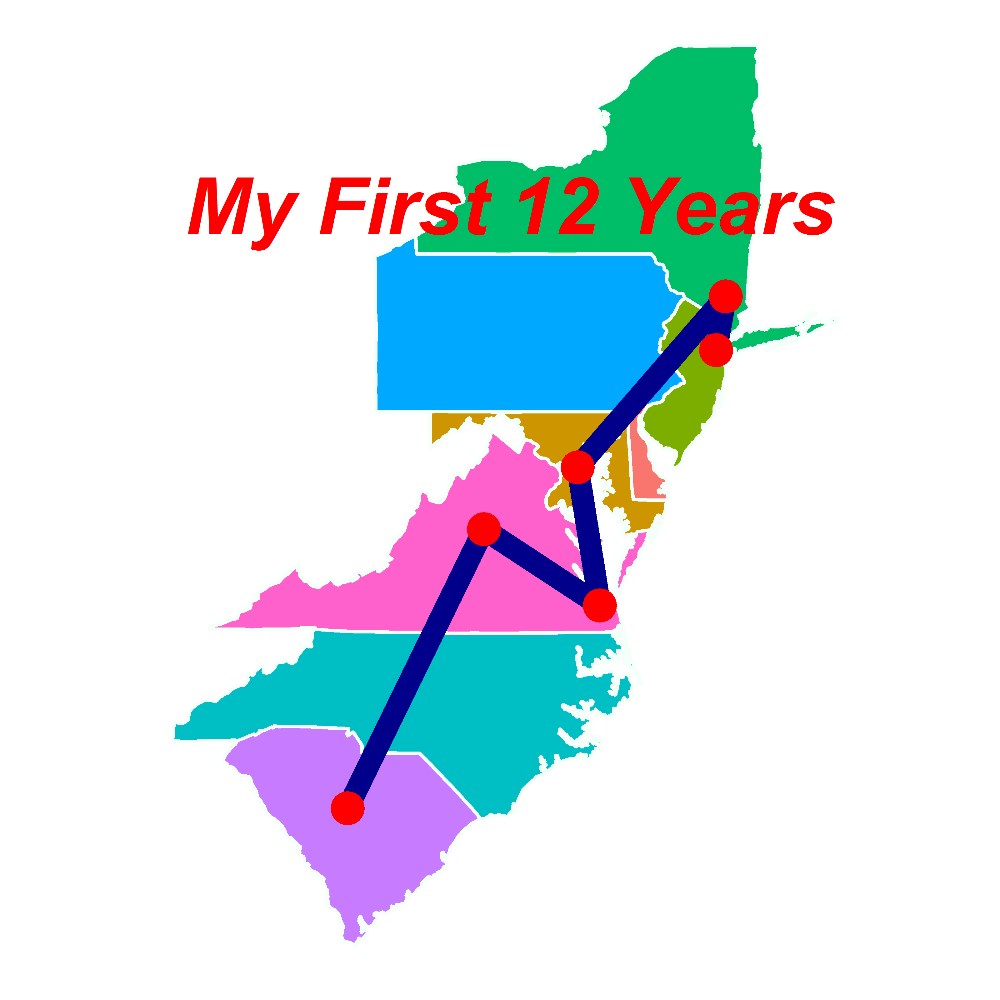

For our final project in our Data Visualization course we were tasked with creating a public visualization using data relevant to a current affair of our choice. It was a chance for us to use all of our data wrangling/visualization tools that we acquired during the semester. For this project I used python and its pandas library, R, R Studio, javascript, d3, and googleCharts. Hopefully, my project shines a spotlight on Staten Island, New York City's forgotten borough. And instead of just focusing on one Island aspect, I decided to expand the project parameters and take a look at Staten Island through a few different lenses.
Actually, I have been thinking about a project like this for some time. This website spawned from an idea I had regarding my eventual CUNY SPS MSDA Capstone Project. My aim for the Capstone project will be to create a data memoir, a bildungsroman for the 21st century. Taking a story and interlacing data visualizations throughout could be a kind of novel genre (albeit one that appeals to the statistically inclined bookworm). It could also serve as a teaching tool, as long as the code to create the vis accompanies the material.
So, I set up this website to read more like a book. Hopefully, someone who visits the site will start with this post and continue reading to the end. This project serves as a nice starting point for what I envision a grander project could become. I never made a website before and a lot of what I tried to do proved to be too difficult. I incorporated an .html file that I generated using R Markdown, and for the sake of continuity, I tried to make sure all of the pages had the same (plain/boring) look. I know I can customize the R Markdown CSS but this was causing issues that I didn't have time to figure out. Website design is definitely something I need to improve upon.
So why Staten Island? Well first off, I think I can legitimately stake claim to the title "Staten Island's #1 Data Vis Enthusiast"! Secondly, Staten Island is such a magical place. Staten Island is the San Francisco of the East is an idea that should be out on the web regardless of its validity (the hills here do not compare to SF, and I live in the hilly section of SI). And there is something about islands that speaks to me (and to others too, it seems). Maybe it's the idea that the borders are so definite; you're from the Island or you're not. It could be the joy I get from taking a boat ride to get to work everyday.
In fact, I'm not from the Island. I wasn't born here. But a lot of people are born here and a lot of these people stay their entire lives. I live 2 blocks from where my wife's great-grandfather built his first home. My brother and sister went to the same high school that my grandparents went to. Staten Island is that type of place, it has "old eyes." After graduating high school, my father left the Island for the army only to return 25 years later. Now when I think about the connection he has to Staten Island, I can't help but think of this guy.

My family didn't move to Staten Island until I was in 7th grade. It was such a different place compared to any of the places I had lived previously. Still, it is different and I hope that over the next few pages you get a chance to explore the Island with me serving as your data guide.